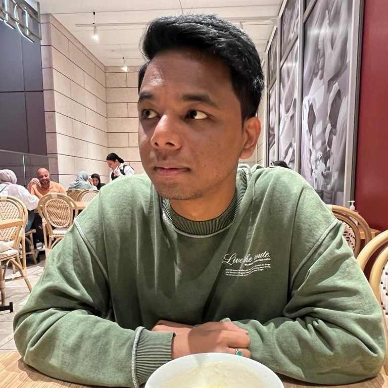

|
Rocktim Jyoti Das I am a NLP and Machine Learning researcher at MBZUAI in Abu Dhabi under the supervison of Prof. Preslav Nakov. My work encompasses a broad spectrum of critical areas, including developing language models for Dialectal Arabic, refining evaluation methodologies, mitigating hallucination issues in Large Language Models. I completed my undergraduate studies at the Indian Institute of Technology, Delhi, which set the foundation for my academic journey. Subsequently, I had the incredible opportunity to spend a year at the DAIR Lab, IIT Delhi as a Project Scientist under the supervision of Prof. Mausam. As a researcher at DAIR lab, I focused on Task-Oriented Dialog Systems and Conversation based Medical Diagnosis. Email / CV / Google Scholar / Twitter / Github |
 |
{kind=link}
ResearchI have a keen interest in the intersection of natural language processing (NLP) and machine learning. My recent endeavors have centered around enhancing the efficiency of large language models (LLM) through in model compression, understanding the multimodal reasoning capabilities of large multimodal models and improving facuality of large scale models. |
Publications |

|
Beyond Size: How Gradients Shape Pruning
Decisions In Large Language Models
Rocktim Jyoti Das, Liqun Ma, Zhiqiang Shen, under review in ICLR, 2024 |
|
Exploring Distributional Shifts in Large Language Models for Code Analysis
Shushan Arakelyan, Rocktim Jyoti Das, Yi Mao, Xiang Ren, accepted in EMNLP, 2023 |
|

|
DKAF: KB Arbitration for Learning Task-Oriented Dialog Systems with Dialog-KB Inconsistencies
Vishal Saley, Rocktim Jyoti Das, Dinesh Raghu, Mausam, accepted in ACL Findings, 2023 |
|
Source code from Jon Barron's website. |